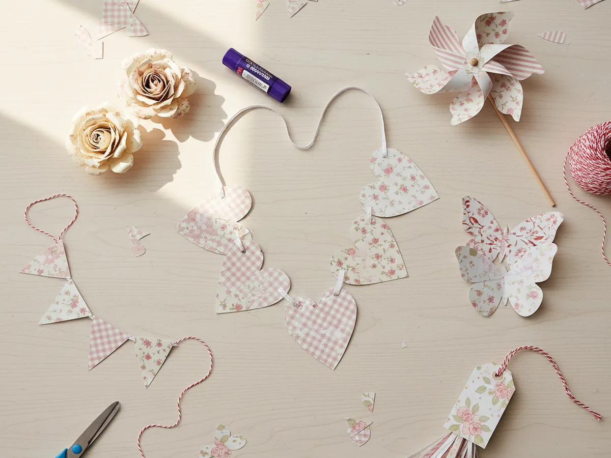
There is something magical about opening a fresh pad of patterned scrapbook paper with your child. The little floral prints, polka dots, gingham checks, and soft watercolor textures suddenly turn an ordinary afternoon into something that feels a little extra special. These easy craft patterned paper ideas are perfect for using up that gorgeous stack of designs you have been saving for the right project. 🌸
This roundup gathers 15 of our favorite simple ways to craft patterned paper with kids of all ages. Some come together in 15 minutes, others take a little longer, but every single one is beginner-friendly and uses supplies you probably already have on hand. Pick one, pick three, or work through the whole list one cozy afternoon at a time.
What You'll Need
These broad supplies cover almost every patterned paper craft on this list, so you only need to gather them once.
- Colorbok Patterned Cardstock 12x12, a 50-sheet assorted pack with 25 designs, perfect for nearly every project here.
- Crayola Construction Paper, a 240-sheet assorted pack for solid-color backings and layering.
- Fiskars Pointed-Tip Kids Scissors, easy-grip and safe for little hands ages 4 and up.
- Elmer's Washable School Glue Sticks, gentle on paper and easy for kids to manage themselves.
- AdTech Archival Permanent Glue Runner, mess-free adhesive that bonds patterned paper cleanly with no wrinkles.
- Fiskars Paper Trimmer 12 inch, makes clean straight cuts on 12x12 sheets without needing a ruler.
- Knaid Washi Tape Set, 40 rolls, lovely for adding extra patterned borders and accents.
- A pencil and a ruler, useful for tracing and measuring before cutting.
15 Easy Craft Patterned Paper Ideas to Make with Your Kids
1. Patterned Paper Heart Garland
Cut a stack of medium hearts from four or five different patterned papers, then string them together with a length of baker's twine using a few dabs of glue along the back. Mix florals with polka dots and stripes for a sweetly mismatched look. This is one of the prettiest ways to craft patterned paper when you want a finished piece you can hang above a doorway or along a child's bookshelf.
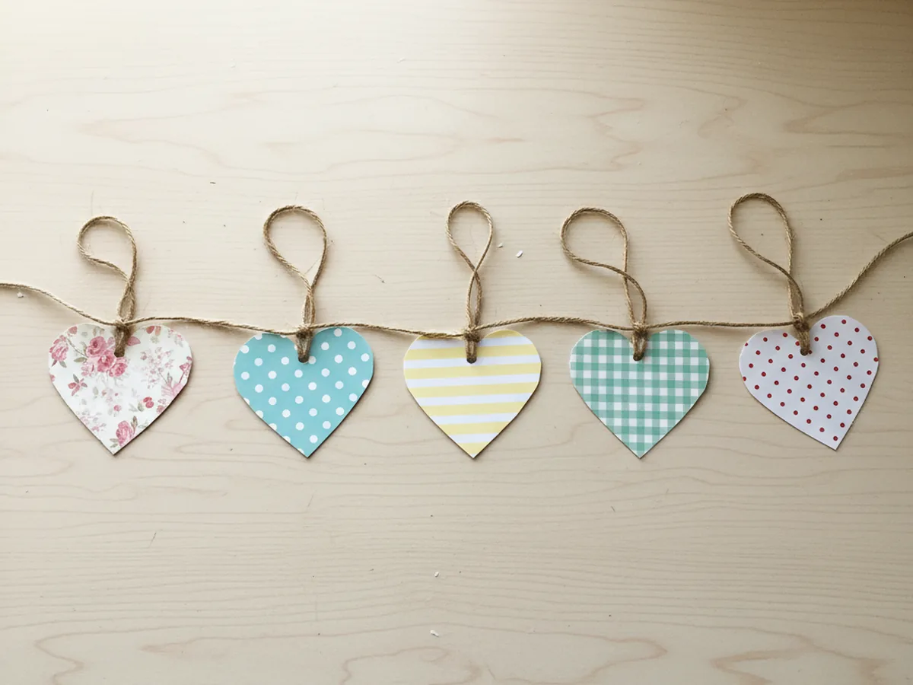
2. Patterned Paper Pinwheel
Cut a six-inch square of double-sided patterned paper, fold the diagonals, snip toward the center on each crease, and pin the four points together onto a wooden skewer or paper straw. Pinwheels feel a bit like magic to small children once they actually spin, and the printed pattern looks even prettier in motion. A sweet little patterned paper craft for a sunny windowsill or backyard play.
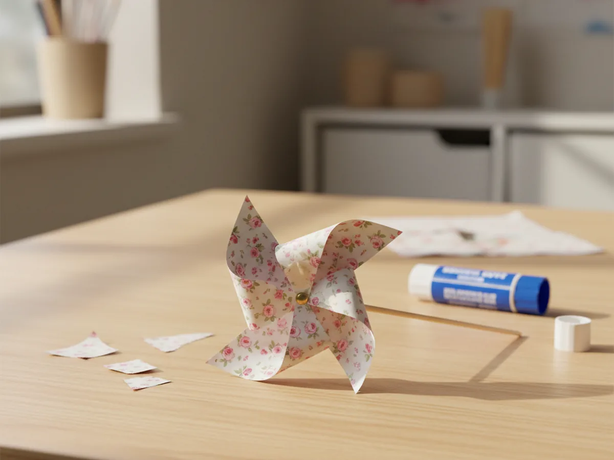
3. Patterned Paper Bookmark with Tassel
Cut a long rectangle from sturdy patterned cardstock, round the corners, and punch a small hole at the top for a yarn or ribbon tassel. Older kids love picking out a print they really love, since this one becomes a little keepsake they actually use. Patterned paper bookmarks also make beautiful tiny gifts to slip into a card for a grandparent or teacher. 💕
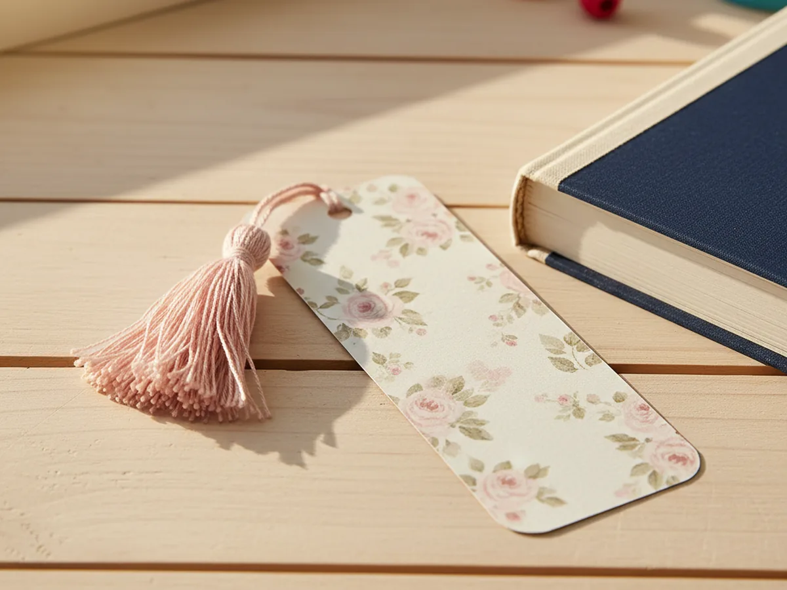
4. Patterned Paper Butterflies
Cut simple butterfly silhouettes from two different patterned papers, layer a smaller one on top of a larger one for a pretty contrast, and pinch the middle to add a little dimensional fold. Glue them onto a kitchen wall, a windowpane, or a piece of cardstock for a small framed piece. This is a forever-charming way to craft patterned paper in spring when everyone is daydreaming about flowers and sunshine.
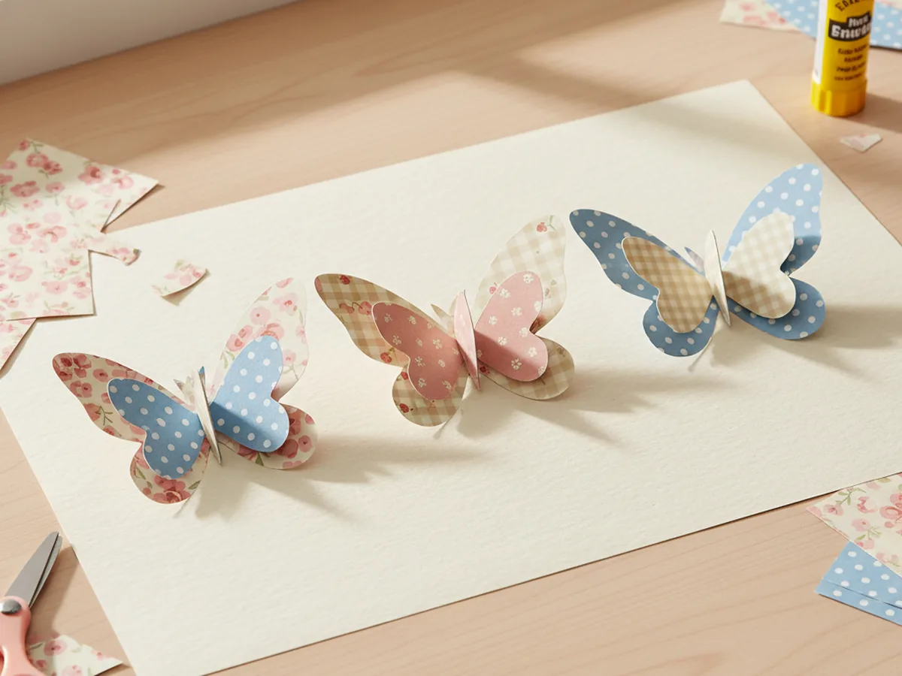
5. Patterned Paper Greeting Card
Fold a sheet of solid cardstock in half and decorate the front with torn or trimmed strips of patterned paper layered like a little scene. Add a tiny patterned heart, star, or flower as the centerpiece and a hand-written greeting inside. Homemade patterned paper greeting cards always feel ten times more special than store-bought, and they take a fraction of the time you might expect.
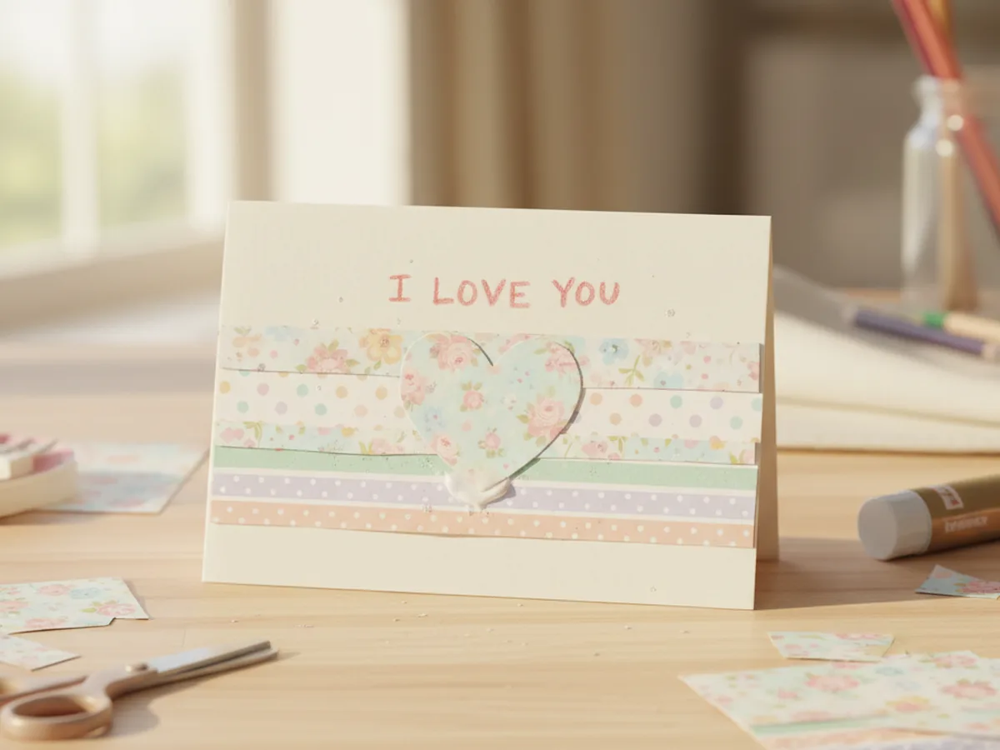
6. Patterned Paper Bunting Banner
Cut a row of small triangle pennants from coordinating patterned papers and glue them to a length of twine so the points hang down evenly. Hang the finished banner across a bedroom shelf, a play kitchen, or a pretend birthday party for a stuffed animal. Patterned paper bunting is one of those easy projects that always looks more impressive than the effort it takes.
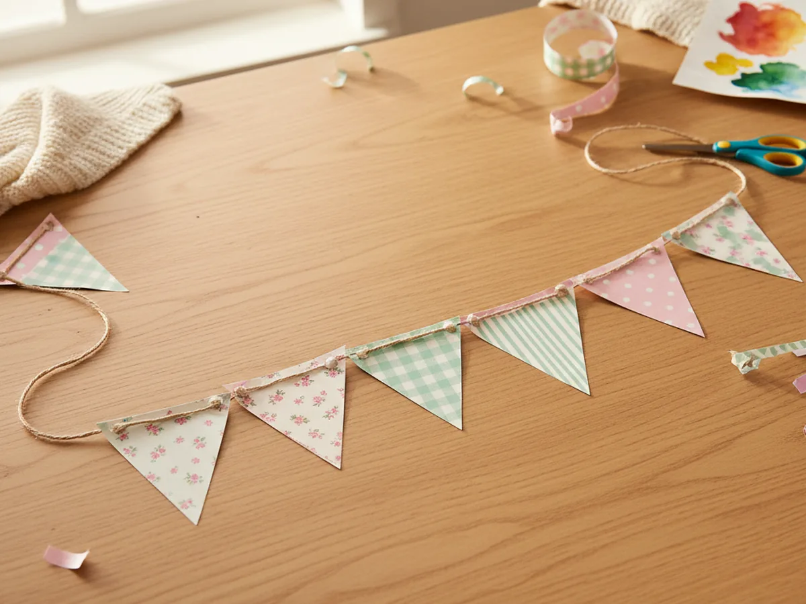
7. Patterned Paper Origami Bow
Fold a small rectangle of patterned paper into a simple origami bow using just five or six folds and a tiny center wrap. These little bows are perfect for topping handmade gifts, decorating cards, or pinning into a child's hair clip. The pattern shows beautifully on the loops, making this patterned paper craft feel like a quick win for slightly older kids.
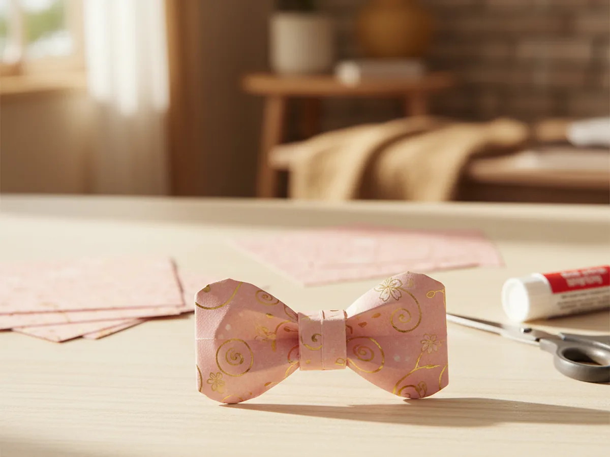
8. Patterned Paper Rolled Roses
Draw a loose spiral on a patterned paper square, cut along the line, and roll the strip from the outside in to form a tiny paper rose. Glue the end down to keep it tight and pop it onto a card front, a wreath, or a little wooden ring. Rolling up these flowers is calming and surprisingly fun, and a small bouquet of patterned paper roses feels like a real handmade treasure. 🌹
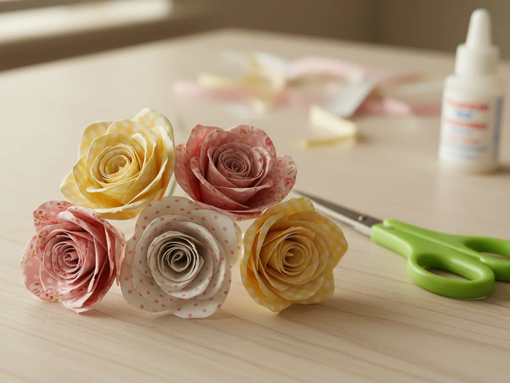
9. Patterned Paper Photo Frame
Cut a square or rectangle from sturdy cardstock and glue strips of patterned paper around the four edges to create a charming photo frame. Trim the inside opening to fit a printed family photo or a child's drawing. Among quick patterned paper crafts, this one stands out because the result actually goes on display. A perfect homemade gift for a grandparent on Mother's Day or a birthday.
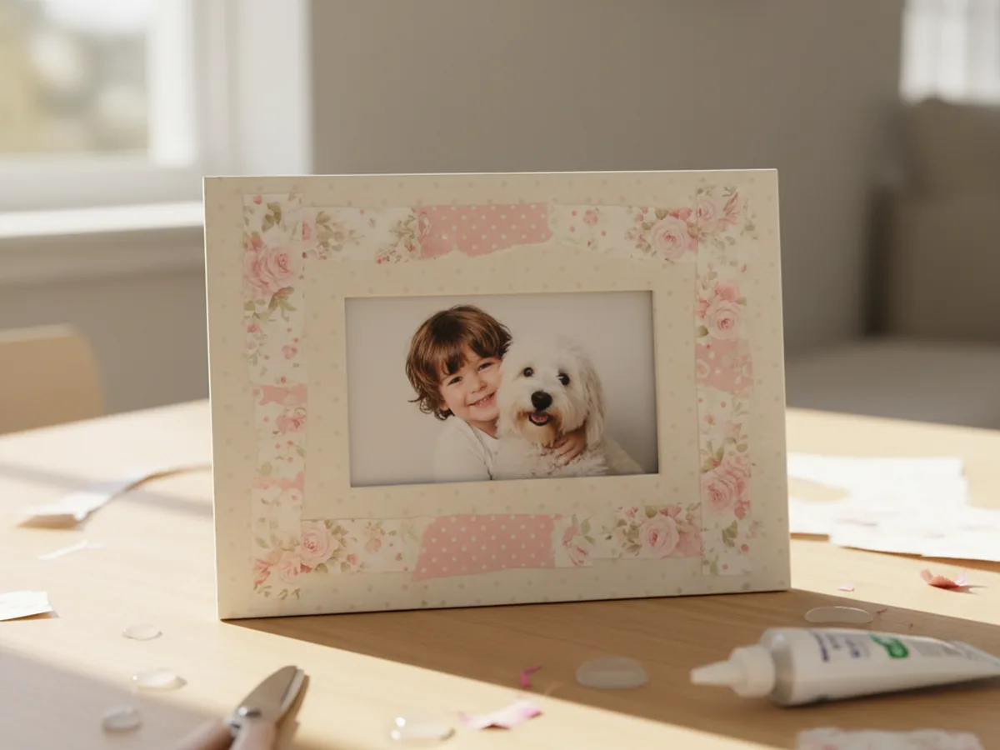
10. Patterned Paper Bird Mobile
Cut a cluster of small bird shapes from different patterned papers, layer wings on top from contrasting prints, and hang each one from a small piece of string tied to a wooden hoop or twig. The slightest breeze will set the birds spinning, which is endlessly entertaining for younger children. A poetic little way to craft patterned paper for a nursery or a sweet corner of a child's room.
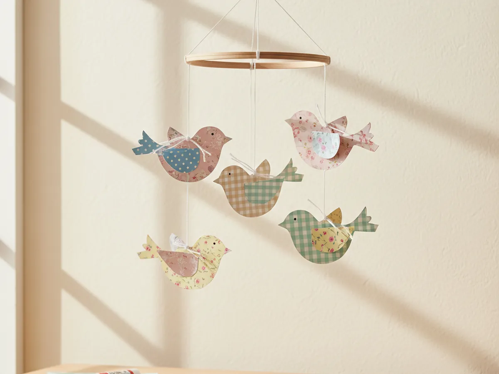
11. Patterned Paper Envelopes
Trace a simple envelope template onto a sheet of patterned paper, cut it out, and fold along the lines using a glue stick to seal the side flaps. Slip a hand-written note inside and seal it with a small sticker or a strip of washi tape. Making patterned paper envelopes from scratch turns a simple note for a friend or sibling into something that feels truly thoughtful and personal.
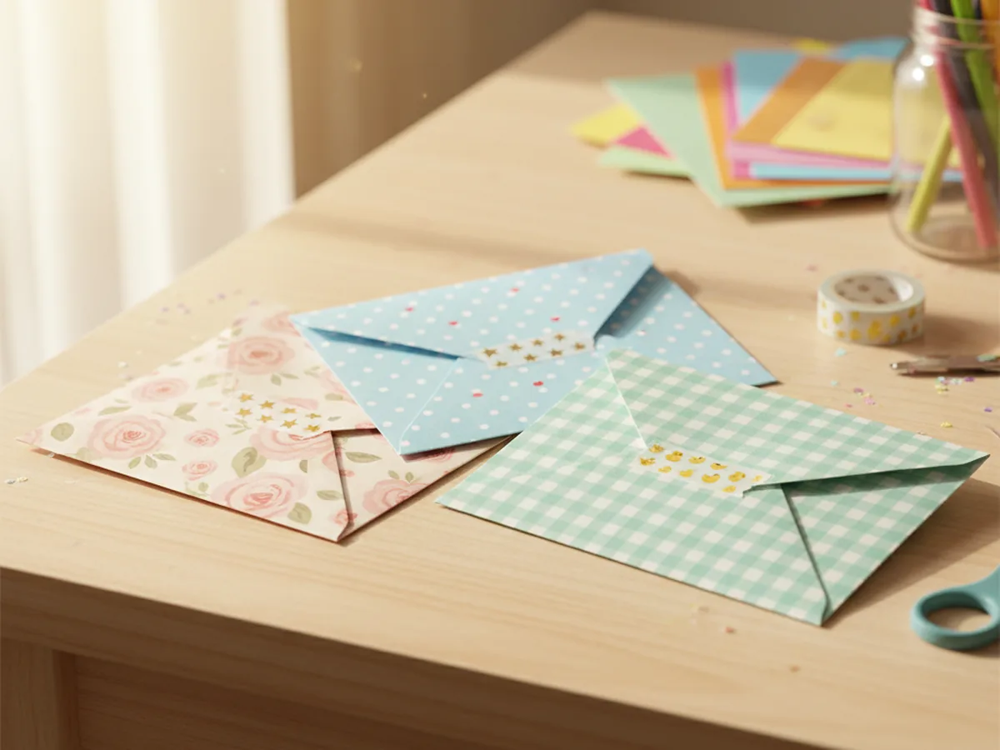
12. Patterned Paper Patchwork Collage
Cut your patterned scraps into uniform squares or hexagons and arrange them on a large sheet of cardstock to look like a quilt. Glue them down once your child is happy with the layout. This is a wonderful low-pressure way to craft patterned paper with toddlers and preschoolers, since the goal is simply to enjoy mixing colors and prints together. The finished piece looks beautiful framed.
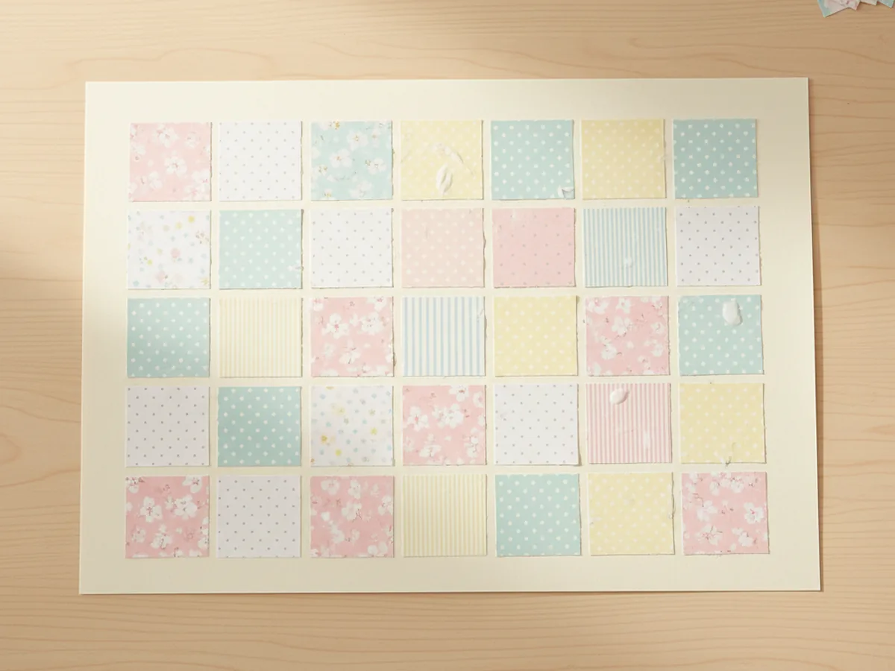
13. Patterned Paper Accordion Fan
Take a long rectangle of patterned paper, fold it back and forth into a tight accordion, then pinch one end and tape it together to form a half-circle fan. Glue a craft stick to the back as a little handle. Accordion fans are one of the simplest patterned paper projects and feel especially lovely on a warm summer day or as a sweet wedding-style hand fan during pretend play.
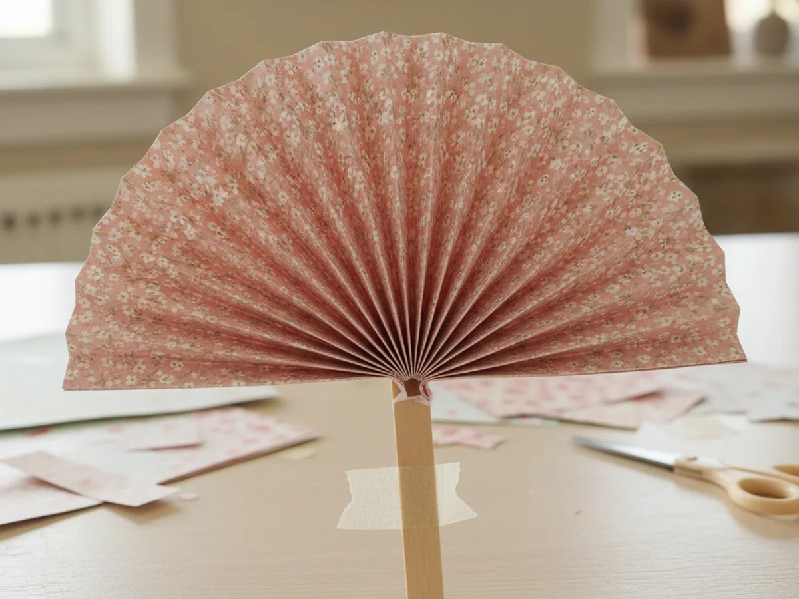
14. Patterned Paper Star Garland
Punch or cut star shapes from a stack of patterned papers, then sew them together down the middle using a needle and thread to create a long flowing garland. Older children can do the sewing with supervision, while younger ones can stack and arrange the stars. Hang it on a shelf or above a bed for a soft, cheerful touch that uses up the prettiest patterned paper scraps. ✨
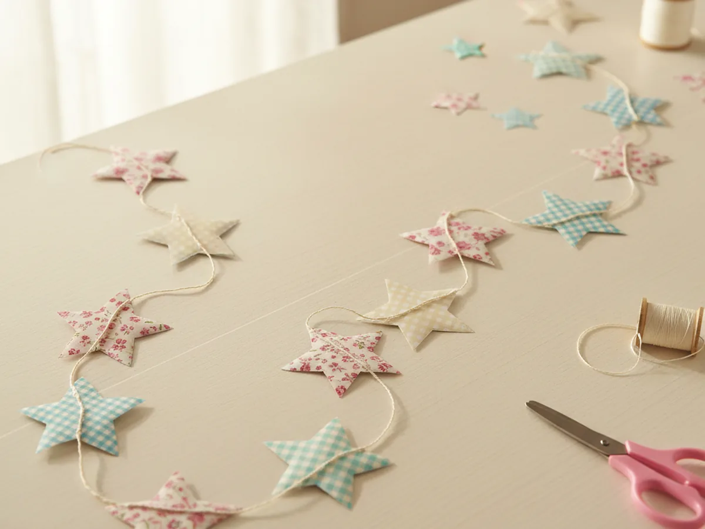
15. Patterned Paper Notebook Cover
Wrap a plain composition notebook or a small journal in patterned paper, securing the edges with double-sided tape on the inside flaps. Add a coordinating washi tape spine and a hand-written name label on the front. This patterned paper craft turns an ordinary back-to-school notebook into something a child genuinely loves opening. A simple little upgrade that makes daily writing feel like a small ritual.
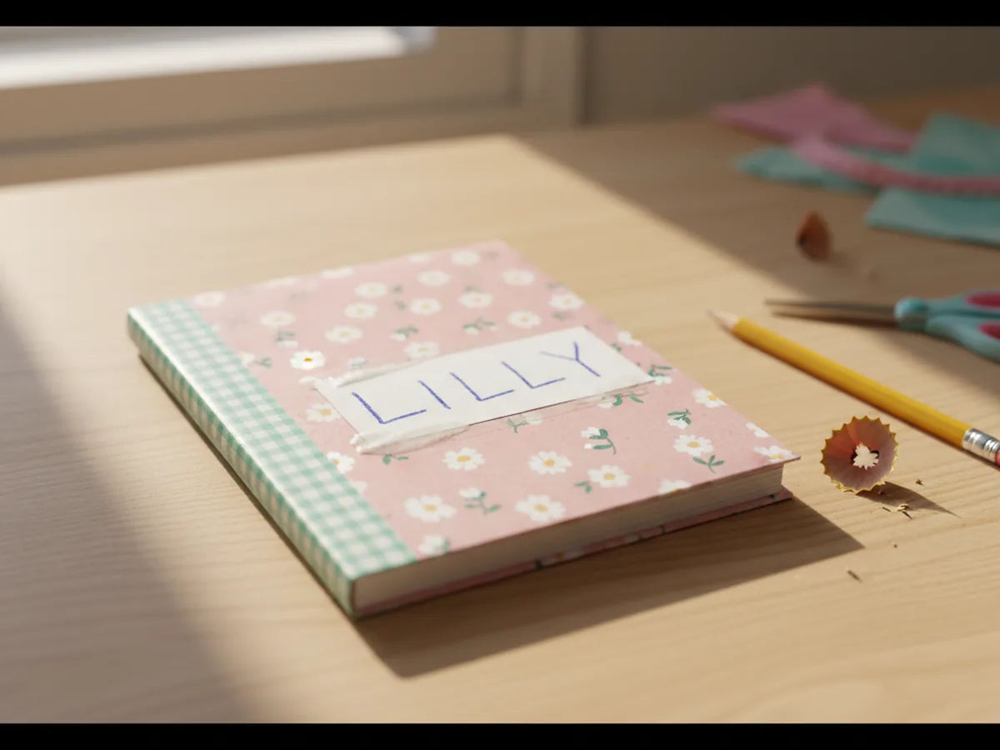
Final Thoughts
The best part of any session to craft patterned paper with your child is what comes after the cutting and gluing ends. Suddenly your bookshelf has a little garland on it, your fridge has a new patchwork collage, and your child keeps reaching for the bookmark they made themselves. Those small reminders of a sweet shared afternoon stay around long after the craft table is wiped down.
Pick the one or two ideas that catch your eye today, gather your prettiest scraps, and start small. Even one finished patterned paper heart on the kitchen table can spark a whole afternoon of giggles, decisions, and proud little smiles together.
More Crafts You'll Love
If your kids enjoyed working with patterned paper, here are two more simple paper craft articles full of fun ideas to try together.
Happy crafting with your little one!